Eine Teilebibliothek nach der Idee der Normenreihe ISO 13584 (PLIB) und IEC 61360. Teile werden in Klassen (Teilefamilien) geordnet, Klassen vererben Merkmale, und jedes Teil trägt Werte für diese Merkmale. Die Anleitung beschreibt alle Funktionen des Programms.
| Schnell einsteigen Die wichtigsten Wege: Klasse anklicken zeigt ihre Teile · Strg+F sucht Teile · Strg+N legt eine Klasse an · Strg+T ein Teil · Rechtsklick öffnet überall das passende Menü · F1 öffnet diese Anleitung. |
PLIB trennt was ein Teil beschreibt von dem einzelnen Teil:
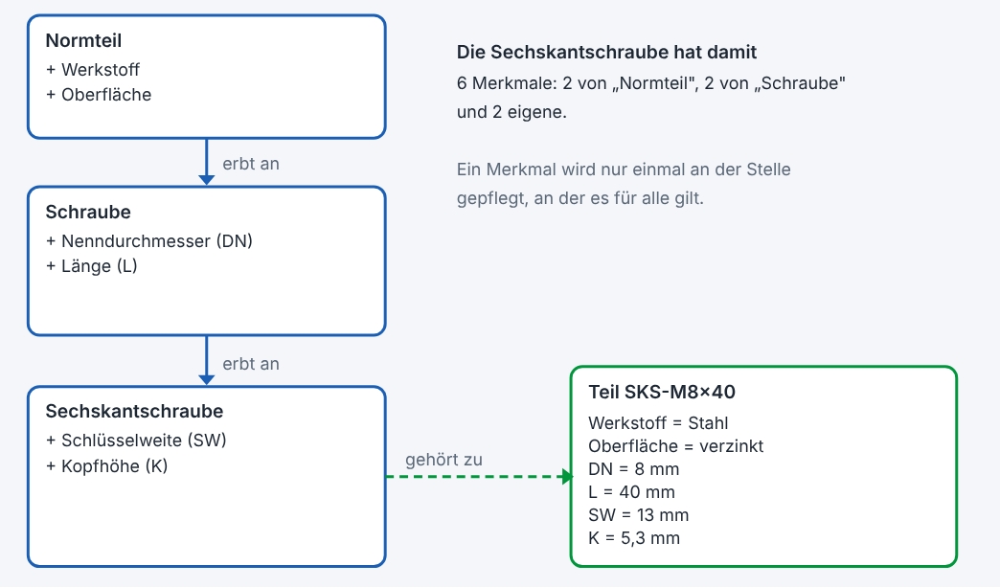
Abbildung 1: Vererbung. Jede Klasse bekommt die Merkmale ihrer Oberklassen dazu (Beispielwerte).
| Begriff | Bedeutung |
|---|---|
| Code | Kurzer eindeutiger Name einer Klasse, eines Merkmals, Lieferanten oder einer Einheit. Erlaubt sind Buchstaben, Ziffern sowie - _ ., höchstens 40 Zeichen. |
| Klassennummer | Vierstufige Nummer jeder Klasse der Form AA.BB.CC.DD, zum Beispiel 10.01.01.00. Sie ist eindeutig und legt fest, wo die Klasse im Baum steht (siehe Die Klassennummer). |
| Suchbegriff | Wort, an dem PLIB eine Klasse erkennt. Grundlage des Klassenvorschlags für neue Teile (Kapitel 7). |
| CAD-Link | Adresse eines Teils in einem CAD-Katalog (3DfindIT, PARTcommunity). PLIB öffnet sie und übernimmt die heruntergeladene Datei. |
| Lieferant | Die Stelle, die ein Element herausgibt oder pflegt. Er ist Teil der Kennung. |
| Kennung (BSU / IRDI) | Eindeutige Bezeichnung aus Lieferant, Code und Version, zum Beispiel EIGEN/SKS#1. |
| Status | ●in Arbeit · ●freigegeben · ●veraltet. Gilt für Klassen und Merkmale. |
| Version | Zähler einer Klasse oder eines Merkmals, wird bei bedeutenden Änderungen erhöht. |
| Einheit | Aus dem Einheitenverzeichnis, mit Umrechnung zwischen Einheiten gleicher Größenart (zum Beispiel mm und m). |
| Aufzählung (enum) | Merkmal mit einer festen Liste erlaubter Werte, zum Beispiel Oberfläche: blank, verzinkt, brüniert. |
| Merkmalkatalog | Die Liste aller Merkmale der Bibliothek, unabhängig davon, welcher Klasse sie zugeordnet sind. |
| Hinweis PLIB setzt die Grundgedanken der ISO 13584 in vereinfachter Form um. Es ist kein zertifiziertes oder normkonformes System. Details siehe Kapitel 17. |
Alle folgenden Dateien liegen im selben Ordner wie plib.exe:
| Datei | Wofür |
|---|---|
plib.exe | Das Programm. |
sqlite3.dll | 64-Bit-Bibliothek für die SQLite-Datenbank. Muss zur Bitzahl des Programms passen. |
libpq.dll und weitere lib*.dll | Nur nötig bei Betrieb mit PostgreSQL (siehe Kapitel 12). |
hilfe\hilfe.html und hilfe\bilder\ | Diese Anleitung im Programm. F1 öffnet sie. |
plib_hilfe.html | Dieselbe Anleitung für den Browser, mit Volltextsuche. |
modellbau_klassenbaum.txt, normteile.txt | Importdateien (optional), siehe Erster Start. |
plib.exe per Doppelklick.plib.sqlite3 neben dem Programm an und füllt sie mit einer kleinen Beispielstruktur (Normteil, Schraube, Sechskantschraube).modellbau_klassenbaum.txt enthält die Klassen mit ihren vierstufigen Klassennummern, die Merkmale, die Einheiten und die Suchbegriffe, mit denen PLIB später Klassen für neue Teile vorschlägt. Das Format steht in Kapitel 11.normteile.txt ein: fertige Teile mit Beschreibung, Merkmalswerten und Hersteller. Diese Teile dienen zugleich als Vergleichsbasis für den Klassenvorschlag (Kapitel 7).klassenbilder neben der plib.exe enthält für jede Klasse des Modellbau-Klassenbaums ein Bild; der Dateiname ist der Klassencode.| Maßangaben der Musterdaten Die Maße der Musterteile sind Richtwerte. Gleiche sie vor einer ernsthaften Verwendung mit den Normen ab. |
plib.exe "D:\Daten\teile.sqlite3" plib.exe --db=D:\Daten\teile.sqlite3
Der Parameter erzwingt eine SQLite-Datenbank an diesem Ort und hat Vorrang vor plib.ini. So lassen sich mit Windows-Verknüpfungen mehrere Datenbanken bequem starten.
Wird neben dem Programm angelegt und beim Beenden aktualisiert. Du kannst sie mit dem Editor ansehen.
| Abschnitt | Inhalt |
|---|---|
[Layout] | Fenstergröße, Breite des Baums, Höhe der Teileliste, Knopfleiste ein/aus, zuletzt gewählte Klasse, Anzeige der Kennungen, Datensprache, Klassenbild-Fenster. |
[Datenbank] | Typ (sqlite oder postgresql), SQLite-Pfad, PostgreSQL-Zugangsdaten. |
[Spalten] | Gemerkte Spaltenreihenfolge der Teile- und Werteliste. |
[Ansicht] | Aussehen: Design (dunkel oder hell), Menueband (ja/nein), Schriftgroesse (7 bis 24 Punkt, 0 = Windows-Vorgabe), Hochaufloesend (nein schaltet die scharfe Darstellung auf 4K-Monitoren ab). |
[SolidEdge] | Basisordner der CAD-Dateien (Basisordner) und Download-Ordner des Browsers für CAD-Kataloge (Downloadordner) sowie die Teilevorlage für STEP-Dateien (VorlageTeil, siehe Kapitel 13). |
Das Fenster besteht von oben nach unten aus Menüleiste, Knopfleiste, dem Arbeitsbereich und der Statusleiste. In der Standardanordnung hat der Arbeitsbereich links den Klassenbaum und darunter das Klassenbild, rechts oben die Teileliste und darunter die Werteliste. Das Klassenbild ist immer sichtbar und zeigt das Bild der gerade gewählten Klasse.
Die Bereiche und die Knopfleiste lassen sich frei anordnen, ähnlich wie in der Lazarus-Entwicklungsumgebung (siehe Bereiche frei anordnen). Die Anordnung wird gemerkt. „Ansicht → Fensteraufteilung zurücksetzen" stellt die Standardanordnung wieder her.
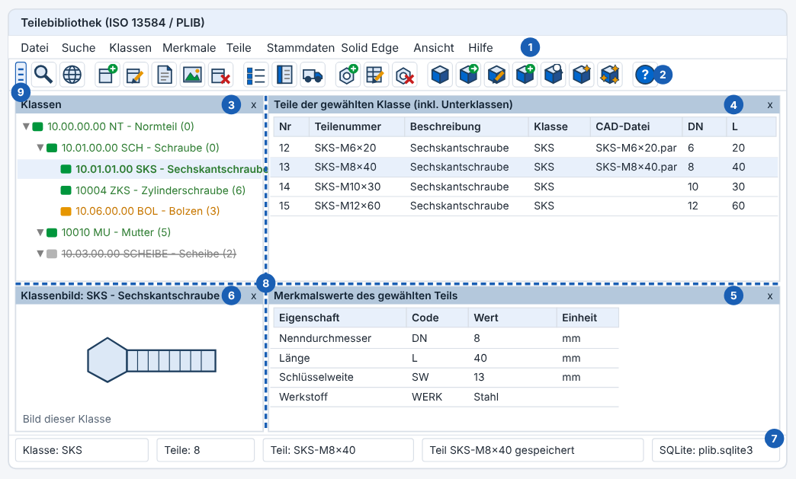
Abbildung 2: Das Hauptfenster in der Standardanordnung (schematisch, die Werte sind Beispiele). Die Zahlen werden unten erklärt.
| Menü | Befehle |
|---|---|
| Datei | Datenbank wechseln / Pfad festlegen · Mit PostgreSQL-Server verbinden · Daten aus SQLite-Datei nach PostgreSQL übernehmen · PostgreSQL-Daten als SQLite-Datei exportieren (zum Beispiel für den Mac) · Musterdaten einfügen · Datenbank leeren (Klassen, Merkmale, Teile) · Klassenbaum aus Textdatei importieren · Normteile importieren · Klassenbilder aus Ordner importieren · Datenbank sichern · Datenbank prüfen · Sicherung wiederherstellen · Sicherungsordner öffnen · Beenden |
| Suche | Teilesuche (mit Merkmalfiltern) (Strg+F) · Klassen und Merkmale suchen |
| Klassen | Neue Klasse (Strg+N) · Klasse umbenennen (F2) · Beschreibung / Status (Strg+D) · Übersetzung der Klasse · Klassenbild zuordnen · Klassenbild entfernen · Suchbegriffe der Klasse · Klasse löschen |
| Merkmale | Merkmale der gewählten Klasse verwalten (Strg+M) · Merkmalkatalog (Strg+K) |
| Teile | Neues Teil (Strg+T) · Werte / Teil bearbeiten (Strg+E) · Teil löschen · CAD-Katalog-Link öffnen (3DfindIT / PARTcommunity) · Alte Teilenummern auf 7-stellig umstellen (einmalig, siehe Kapitel 6) |
| Stammdaten | Lieferanten · Datenquellen im Internet (ETIM) · Einheiten · Punkte für den Klassenvorschlag |
| Solid Edge | Teil in Solid Edge öffnen (Strg+O) · CAD-Datei zuordnen / entfernen · Eigenschaften nach Solid Edge schreiben · Teil in Baugruppe einfügen · Aktuelles Dokument in PLIB zeigen (Strg+G) · Basisordner für CAD-Dateien festlegen · Download-Ordner für CAD-Kataloge festlegen · Verbindung testen |
| Plugins | Erzeugt Modelle für das gewählte Teil, zum Beispiel „STEP-Modell erzeugen (SolidCraft)". Das Menü erscheint nur, wenn im Ordner plugins ein Plugin liegt. Die Befehle stehen auch im Rechtsklick-Menü der Teileliste. |
| Ansicht | Dunkles Design · Menüband (nach Neustart) · Schriftgröße · Anzeige-Info · Tabellenspalten ein-/ausblenden · Knopfleiste anzeigen · Bereiche (Klassenbaum, Teileliste, Werteliste, Klassenbild ein- und ausblenden) · Aktualisieren (F5) · Klassenbaum aufklappen / zuklappen · Fensteraufteilung zurücksetzen · Spaltenreihenfolge zurücksetzen · Datensprache wählen · Kennungen als IRDI anzeigen · Kennungen im Baum anzeigen |
| Hilfe | Bedienungsanleitung (F1, mit Suchfeld) · Anleitung im Browser öffnen · Kurzhilfe · Über (Version, Entwickler, Copyright) · Fehlerprotokoll anzeigen |
Alle Einstellungen findest du im Menü Ansicht. Sie werden in plib.ini gemerkt.
Optional liegt neben plib.exe ein Ordner fonts mit IBMPlexSans-Regular.ttf und IBMPlexSans-Bold.ttf. PLIB verwendet die Schrift dann nur für sich (sie wird nicht installiert). Fehlen die Dateien, nimmt PLIB die Windows-Schrift.
Quadratische Knöpfe mit Symbol. Hält man die Maus kurz darüber, erscheint ein Hinweis mit Name, Tastenkürzel und Wirkung. Bei schmalem Fenster bricht die Leiste in eine zweite Zeile um. Über „Ansicht → Knopfleiste anzeigen" blendest du sie aus. Am Griff ganz links (zwei Doppelpunkte) lässt sich die Leiste an einen anderen Fensterrand setzen oder frei schweben lassen, siehe Bereiche frei anordnen.
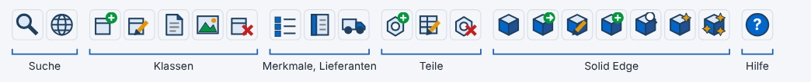
Abbildung 3: Die Knopfleiste, in Gruppen geordnet. Die einzelnen Symbole erklärt die Tabelle darunter.
| Symbol | Funktion | Kürzel |
|---|---|---|
| Lupe | Teilesuche | Strg+F |
| Globus | Datensprache wählen | |
| Kästchen mit Plus | Neue Klasse | Strg+N |
| Kästchen mit Stift | Klasse umbenennen | F2 |
| Blatt mit Eselsohr | Beschreibung / Status der Klasse | Strg+D |
| Bild mit Berg und Sonne | Klassenbild zuordnen | |
| Kästchen mit rotem Kreuz | Klasse löschen | |
| Liste mit Punkten | Merkmale der Klasse verwalten | Strg+M |
| Buch | Merkmalkatalog | Strg+K |
| Lastwagen | Lieferanten | |
| Mutter mit grünem Plus | Neues Teil | Strg+T |
| Tabelle mit Stift | Werte / Teil bearbeiten | Strg+E |
| Mutter mit rotem Kreuz | Teil löschen | |
| Würfel | Solid Edge testen | |
| Würfel mit Pfeil | Teil in Solid Edge öffnen | Strg+O |
| Würfel mit Stift | Eigenschaften nach Solid Edge schreiben | |
| Würfel mit Plus | Teil in Baugruppe einfügen | |
| Würfel mit Lupe | Aktuelles Solid-Edge-Dokument in PLIB zeigen | Strg+G |
| Fragezeichen | Diese Bedienungsanleitung | F1 |
Der Baum zeigt die Klassenhierarchie. Pfeile klappen Zweige auf und zu. Ein Klick auf eine Klasse zeigt rechts ihre Teile (auch die der Unterklassen) und das Klassenbild. Jede Zeile hat die Form
10.01.01.00 SKS - Sechskantschraube (8) <EIGEN/SKS#1>
also Klassennummer, Code – Name, in Klammern die Anzahl der Teile direkt in dieser Klasse und in spitzen Klammern die Kennung. Die Kennung lässt sich über „Ansicht → Kennungen im Baum anzeigen" ausblenden.
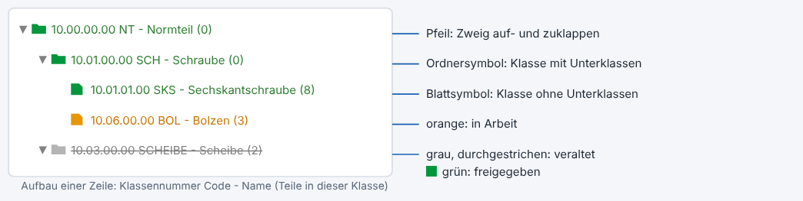
Abbildung 4: Symbole und Farben im Klassenbaum.
Zeigt alle Teile der gewählten Klasse und ihrer Unterklassen. Die festen Spalten sind: Teilenummer, Beschreibung, Hersteller, Klasse, Klassennr, BSU und CAD-Datei. Danach folgt je eine Spalte für jedes Merkmal der Klasse, ihrer Oberklassen und ihrer Unterklassen. Bei Teilen, für die ein Merkmal nicht gilt, bleibt die Zelle leer.
Über „Ansicht → Tabellenspalten ein-/ausblenden" bestimmst du, welche Spalten die Tabellen zeigen. Ein Haken heißt: Die Spalte wird angezeigt. Abgewählte Spalten verschwinden aus der Tabelle; die Daten bleiben erhalten.
plib.ini, Abschnitte [Spalten] und [SpaltenKlasse]). „Ansicht → Spaltenreihenfolge zurücksetzen" stellt alles auf den Standard zurück.Unter der Teileliste stehen die Merkmalswerte des gewählten Teils: Eigenschaft, Code, Wert, Einheit. Bei Aufzählungen wird der Name statt des Codes angezeigt. Ein Doppelklick auf eine Zeile ändert den Wert.
Fünf Felder von links nach rechts: gewählte Klasse · Anzahl der Teile · gewähltes Teil · letzte Meldung (zum Beispiel „Teil SKS-M8x40 gelöscht") · aktuelle Datenbank.
Der Bereich zeigt immer das Bild der gewählten Klasse (siehe Klassenbild). In der Titelleiste steht, um welche Klasse es geht, unten, ob das Bild zur Klasse selbst oder zu einer Oberklasse gehört. Ein Rechtsklick auf das Bild öffnet das Menü zum Zuordnen, Entfernen und Speichern. Wie jeder Bereich lässt er sich verschieben, schweben lassen oder mit dem x in der Titelleiste schließen. „Ansicht → Bereiche" blendet ihn wieder ein.
Klassenbaum, Teileliste, Werteliste und Klassenbild sind eigene Bereiche mit einer blauen Titelleiste. Du kannst sie beliebig umbauen, das gilt auch für die Knopfleiste. Die Anordnung wird beim Beenden in plib.ini gespeichert (Abschnitt [Dock]).
| Du ziehst auf … | Ergebnis |
|---|---|
| den linken, rechten, oberen oder unteren Teil eines anderen Bereichs | Der Bereich wird dort angedockt, der andere rückt zur Seite. Der Rahmen zeigt die Hälfte, die der Bereich bekommt. |
| die Mitte eines anderen Bereichs | Die beiden Bereiche tauschen die Plätze. |
| den äußersten Rand des Arbeitsbereichs | Der Bereich wird über die ganze Höhe oder Breite am Rand angedockt. |
| eine Stelle außerhalb des Hauptfensters | Der Bereich wird ein frei schwebendes Fenster, auch auf einem zweiten Bildschirm. |
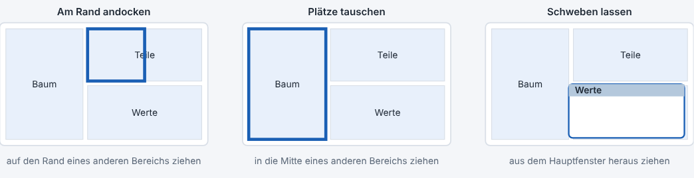
Abbildung 5: Beim Ziehen einer Titelleiste zeigt ein blauer Rahmen, wo der Bereich landet.
Ein schwebendes Fenster hat dieselbe blaue Titelleiste. Ziehe sie auf das Hauptfenster und lege den Bereich wie oben beschrieben ab. Alternativ wählst du im Menü der Titelleiste (Rechtsklick) „Am rechten Rand andocken".
Zwischen angedockten Bereichen liegt je eine Trennlinie. Mit der Maus verschieben ändert die Größe der beiden Nachbarn. Wird das Fenster größer oder kleiner, bleibt das Größenverhältnis erhalten.
Fasse die Knopfleiste am Griff links (zwei Doppelpunkte auf farbigem Grund) und ziehe sie:
| Standard wiederherstellen „Ansicht → Fensteraufteilung zurücksetzen" setzt alle Bereiche und die Knopfleiste auf die Ausgangsanordnung zurück. Ist die Anordnung in plib.ini beschädigt, verwendet PLIB beim Start automatisch den Standard. Wer die Datei von Hand zurücksetzen will, löscht im Abschnitt [Dock] die Zeilen. |
| Grenzen Mehrere Bereiche lassen sich nicht als Reiter übereinanderlegen (wie in der Lazarus-Oberfläche). Schwebende Fenster haben keine eigenen Menütastenkürzel; die Tastenkürzel gelten, solange das Hauptfenster aktiv ist. |
Ein Rechtsklick markiert zuerst das Element unter der Maus und öffnet dann das passende Menü. Nicht passende Einträge sind ausgegraut.
| Wo | Einträge |
|---|---|
| Klassenbaum | Neue Unterklasse · Neue Hauptklasse · Klasse umbenennen · Beschreibung / Status · Übersetzung · Klassenbild zuordnen / entfernen · Merkmale der Klasse verwalten · Neues Teil in dieser Klasse · Suchbegriffe der Klasse · Alle aufklappen / zuklappen · Klasse löschen |
| Teileliste | Werte / Teil bearbeiten · Neues Teil in der Klasse · In Solid Edge öffnen · In Baugruppe einfügen · CAD-Datei zuordnen / entfernen · Eigenschaften nach Solid Edge schreiben · Teilenummer kopieren · Zeile kopieren (tabulatorgetrennt, direkt in Excel einfügbar) · Teil löschen · CAD-Katalog-Link öffnen |
| Werteliste | Wert ändern · Wert löschen · Wert kopieren · Alle Werte des Teils bearbeiten |
| Merkmalslisten in den Dialogen | Neues Merkmal · ändern · Beschreibung / Status · Übersetzung · Aufzählungswerte · entfernen bzw. löschen · (im Katalog) der gewählten Klasse zuordnen |
| Bildfenster | Bild zuordnen · Bild entfernen · Bild speichern unter |
Jede Klasse trägt eine vierstufige Klassennummer der Form AA.BB.CC.DD. Sie sagt, wo die Klasse im Baum steht: Die erste Gruppe gehört der Hauptklasse, jede weitere einer Ebene darunter. Eine nicht belegte Ebene steht als 00.
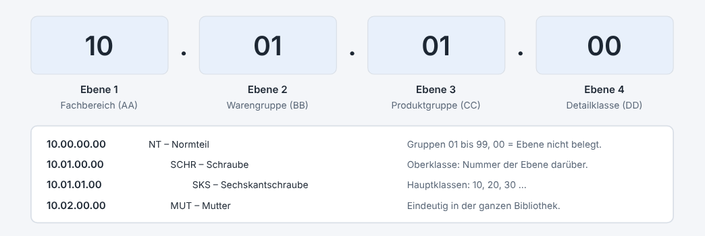
Abbildung 6: Aufbau der Klassennummer AA.BB.CC.DD und Beispiele aus dem Startpaket
AA.00.00.00 und zählen in Zehnerschritten (10, 20, 30 …). So bleibt Platz für Einfügungen.10.01.00.00 unter 10.00.00.00.01 bis 99 möglich, ohne Lücken am Ende der Nummer. Tiefer als vier Ebenen geht es nicht.SCHR01.Der Code muss eindeutig sein. Ist er vergeben, meldet PLIB das, bevor etwas gespeichert wird.
Ändert Code, Name und Klassennummer. Danach fragt PLIB nach dem Lieferanten-Code und, ob die Versionsnummer erhöht werden soll. Bei einer freigegebenen Klasse wird die Version automatisch erhöht.
Hier pflegst du Kurzname, Synonyme (mit Semikolon getrennt), Definition, Anmerkung und den Status. Ändert sich bei einer freigegebenen Klasse der Inhalt, steigt die Version automatisch. Veraltete Klassen erscheinen grau und durchgestrichen mit dem Zusatz „(veraltet)".
„Klassen → Suchbegriffe der Klasse" öffnet die Begriffe, an denen PLIB die Klasse erkennt (zum Beispiel „DIN933", „Sechskant", „Inbus"). Sie bestimmen, welche Klasse PLIB für ein neues Teil vorschlägt. Einzelheiten stehen in Kapitel 7.
Jeder Klasse kann ein Bild zugeordnet werden, zum Beispiel eine bemaßte Zeichnung der Teilefamilie, auf der die Merkmale (L, SW, K …) eingetragen sind.
Siehe Kapitel 10.
Der Dialog listet alle Merkmale der gewählten Klasse, auch die geerbten. Geerbte tragen den Zusatz „geerbt". Zu jeder Zeile gehören Name, Einheit, Datentyp und die Kennung.
| Knopf | Wirkung |
|---|---|
| Neu | Legt ein Merkmal an und ordnet es der Klasse zu. Gibt es den Code schon, wird das vorhandene Merkmal nur zugeordnet. |
| Ändern | Ändert Code, Name, Einheit und, solange noch keine Werte existieren, den Datentyp. Die Änderung gilt in allen Klassen, die das Merkmal nutzen. |
| Entfernen | Nimmt ein direkt zugeordnetes Merkmal von der Klasse. Geerbte Merkmale entfernst du an der Oberklasse. Die zugehörigen Werte der betroffenen Teile werden gelöscht. Nutzt danach keine Klasse das Merkmal mehr, verschwindet es auch aus dem Katalog. |
| Beschreibung | Kurzname, Synonyme, Definition, Anmerkung, Status. |
| Übersetzung | Name und Definition in einer anderen Sprache. |
| Aufzählung | Verwaltet die erlaubten Werte eines Merkmals vom Typ enum. |
| Typ | Eingabe |
|---|---|
string | Beliebiger Text. |
integer | Ganze Zahl. PLIB prüft die Eingabe. |
real | Dezimalzahl, Komma oder Punkt. PLIB prüft die Eingabe. |
boolean | 0, 1, ja, nein, true oder false. |
enum | Auswahl aus einer Liste (Aufzählung). Bei Teilen wird der Code gespeichert und der Name angezeigt. |
Beim Merkmal gibst du den Code einer Einheit aus dem Einheitenverzeichnis an (zum Beispiel mm). Dadurch kann PLIB umrechnen, etwa in der Suche. Eine Einheit, die nicht im Verzeichnis steht, wird als freier Text übernommen, ohne Umrechnung.
Für ein Merkmal vom Typ enum pflegst du die erlaubten Werte mit Code und Name: Neu, Ändern (ändert der Code, ziehen die Werte der Teile mit), Übersetzung, Entfernen (löscht auch alle Verwendungen bei Teilen, nach Rückfrage). Legst du ein neues enum-Merkmal an, öffnet sich diese Verwaltung gleich.
Zeigt alle Merkmale der Bibliothek, jeweils mit der Zahl der Klassen, die sie nutzen.
| Knopf | Wirkung |
|---|---|
| Neu | Legt ein Merkmal im Katalog an, ohne es einer Klasse zuzuordnen. |
| Ändern | Wie oben. |
| Löschen | Entfernt das Merkmal aus dem Katalog, aus allen Klassen und alle zugehörigen Werte. PLIB nennt vorher die Zahl der betroffenen Klassen. |
| Zur Klasse | Ordnet das gewählte Merkmal der Klasse zu, die vor dem Öffnen im Baum markiert war (sie steht in der Titelzeile des Dialogs). |
| Beschreibung, Übersetzung, Aufzählung | Wie oben. |
Die Teile der Klasse bekommen das Merkmal sofort, die Werte sind zunächst leer und werden über „Werte bearbeiten" nachgetragen. Ein Merkmal wie „Werkstoff" hängst du am besten an die oberste passende Klasse, damit alle Unterklassen es erben.
Neues Teil und Bearbeiten benutzen dieselbe Maske. Sie zeigt oben die Stammdaten des Teils und darunter ein Feld für jedes Merkmal der Klasse, auch die geerbten:
Speichern legt das Teil mit allen Werten in einem Schritt an, Abbrechen verwirft die Eingabe.
Das neue Teil wird in der Teileliste markiert. Weißt du die Klasse schon, geht es schneller: Rechtsklick auf die Klasse im Baum → Neues Teil in dieser Klasse überspringt den Vorschlag und öffnet gleich die Maske.
Öffnet dieselbe Maske mit den gespeicherten Daten. Ändere, was nötig ist, und speichere. Ein geleertes Merkmalfeld löscht den Wert.
Einzelne Werte gehen schneller über die Werteliste: Doppelklick auf eine Zeile oder Rechtsklick → „Wert ändern".
Teile mit alten, sprechenden Nummern (zum Beispiel ISO4762-M3x20-A2-70) stellst du einmal um: „Teile → Alte Teilenummern auf 7-stellig umstellen". Alle betroffenen Teile bekommen der Reihe nach neue Nummern; die alte Nummer bleibt nur intern erhalten und wird nicht mehr angezeigt. Zugeordnete CAD-Dateien bleiben zugeordnet, neu erzeugte Dateien heißen nach der neuen Nummer. Lege vorher eine Sicherung der Datenbank an.
Markiere das Teil in der Teileliste, wähle „Teil löschen" oder drücke Entf. PLIB nennt die Teilenummer und löscht das Teil samt Werten nach Rückfrage. Die Markierung bleibt an der gleichen Stelle, du kannst gleich das nächste löschen. Mehrere Teile auf einmal löschen geht nicht.
Bei einer großen Bibliothek ist die richtige Klasse für ein neues Teil nicht immer offensichtlich. PLIB schlägt sie deshalb vor: Aus deiner Bezeichnung zählt es Punkte für jede Klasse zusammen und zeigt die Klassen mit den meisten Punkten zuerst, samt Begründung.
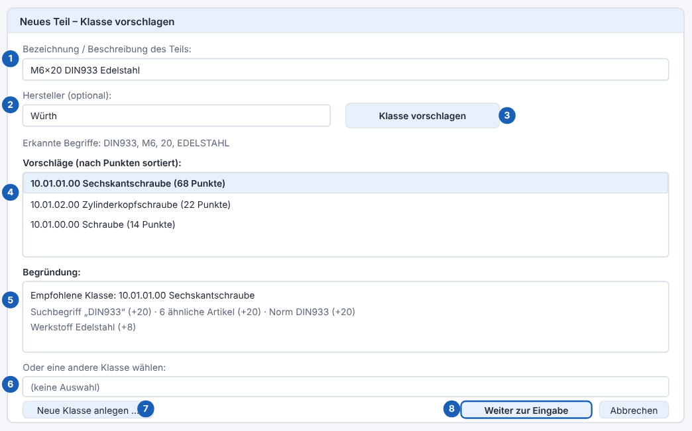
Abbildung 7: Das Fenster „Neues Teil – Klasse vorschlagen" mit Vorschlägen und Begründung
| Kriterium | Wirkung | Standard |
|---|---|---|
| Suchbegriff | Ein Suchbegriff der Klasse kommt in der Bezeichnung vor. Die Gewichtung des Begriffs (Standard 10) skaliert die Punkte. | 10 |
| Ähnliche Artikel | Bereits angelegte Teile mit ähnlicher Beschreibung. Jedes ähnliche Teil der Klasse bringt Punkte; es zählen höchstens so viele Teile, wie die Obergrenze erlaubt. | 10 je Teil, höchstens 20 Teile |
| Norm | Eine Normnummer (zum Beispiel DIN933) aus der Bezeichnung stimmt mit dem Merkmal „Norm" von Teilen der Klasse überein. | 20 |
| Werkstoff | Ein erkannter Werkstoff (zum Beispiel Edelstahl, A2, Messing) stimmt mit dem Werkstoff von Teilen der Klasse überein. | 15 |
| Merkmalswert | Je ein Wert aus der Bezeichnung (zum Beispiel M6 oder 20), der bei Teilen der Klasse als Merkmalswert vorkommt. | 5 je Wert |
| Historie | Du hast für eine ähnliche Bezeichnung früher diese Klasse gewählt. PLIB lernt so aus deinen Entscheidungen. | 10 |
Die Standardwerte kannst du unter Stammdaten → Punkte für den Klassenvorschlag ändern. Erlaubt sind ganze Zahlen von 0 bis 1000; 0 schaltet ein Kriterium ab. Liegen mehrere Klassen dicht beieinander, zeigt die Begründung, was den Unterschied macht; entscheide dann selbst.
Ein Suchbegriff ist ein Wort, an dem PLIB eine Klasse erkennt. Er gilt für genau eine Klasse und hat eine Gewichtung.
DIN933;20. Häufige Schreibweisen, Normnummern und Umgangssprache sind sinnvoll (zum Beispiel „Inbus" für die Zylinderschraube mit Innensechskant).Beim Import eines Klassenbaums kommen die Suchbegriffe über Zeilen mit S| mit (siehe Kapitel 11).
| Grenzen Der Vorschlag ist eine Hilfe, keine Gewissheit. PLIB versteht keine Sprache, es zählt Treffer. Bezeichnungen ohne bekannte Begriffe, Normnummern oder ähnliche Teile ergeben keinen brauchbaren Vorschlag; wähle dann die Klasse von Hand. |
„Stammdaten → Lieferanten" verwaltet die Herausgeber. Ein Lieferant hat Code, Name und optional die Bestandteile einer genormten Kennung: ICD (vierstellig, nach ISO/IEC 6523), Organisations-ID, Organisationsteil und Wörterbuch-Kennung.
EIGEN („Eigener Lieferant").„Stammdaten → Einheiten" enthält rund 30 vorbelegte Einheiten (Länge, Masse, Zeit, Kraft, Druck, Temperatur, Winkel, Fläche, Volumen, Drehmoment, Leistung, Spannung, Strom). Jede Einheit hat Code, Name, Größenart, einen Faktor zur SI-Basiseinheit und eine Verschiebung (nur für Temperaturen nötig).
Basiswert = Wert × Faktor + Verschiebung mm → Faktor 0,001 (1 mm = 0,001 m) °C → Faktor 1, Verschiebung 273,15 (0 °C = 273,15 K)
Einheiten gleicher Größenart lassen sich ineinander umrechnen. Eine Einheit löschen kannst du nur, wenn kein Merkmal sie verwendet. Ändert sich der Code einer Einheit, zeigen die Merkmale automatisch den neuen.
| Form | Aufbau | Beispiel |
|---|---|---|
| Kurz (Standard) | Lieferant/Code#Version | EIGEN/SKS#1 |
| IRDI-artig | ICD/OI/OPI//DI#Code#Version (dreistellig) | 0112/2///61360_4#AAE867#001 (nur Aufbaubeispiel) |
Zwischen den Formen schaltest du mit „Ansicht → Kennungen als IRDI anzeigen". Teile haben keine Version, ihre Kennung lautet Lieferant/Teilenummer.
| Wichtig Das IRDI-Format ist an Beispiele aus ECLASS und IEC CDD angelehnt, aber nicht gegen die Norm geprüft. ICD und Organisations-ID sind bei dir frei einstellbar. Echte, weltweit gültige Kennungen setzen eine Registrierung bei der zuständigen Stelle voraus. Bis dahin sind deine Kennungen rein lokal. |
PLIB hat zwei Suchfenster im Menü Suche: die Teilesuche für Teile und die einfache Suche für Klassen und Merkmale.
Das Fenster bleibt neben dem Hauptfenster offen. Du kannst weiter im Hauptfenster arbeiten und mit der Suche zurückspringen. Die Ergebnisse stammen direkt aus der Datenbank und erscheinen schon beim Tippen (nach einer kurzen Pause).
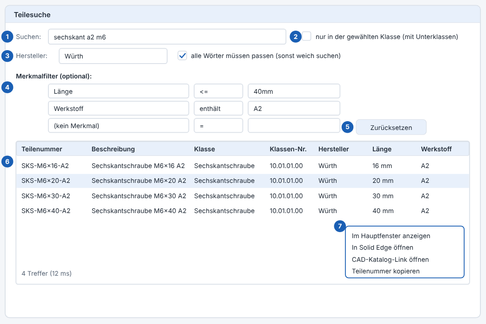
Abbildung 8: Die Teilesuche mit Suchwort, Hersteller, Merkmalfiltern und Trefferliste
Wähle in einer Zeile ein Merkmal (die Liste enthält alle Merkmale der Bibliothek), einen Vergleich und einen Wert. Mehrere Zeilen gelten gemeinsam (UND).
| Vergleich | Bedeutung | Beispiel |
|---|---|---|
= | gleich | Nenndurchmesser = 8 |
> < | größer, kleiner | Länge > 30 |
>= <= | größer gleich, kleiner gleich | Länge <= 40mm |
| enthält | Text enthält den Wert | Werkstoff enthält A2 |
Bei Zahlenmerkmalen darfst du eine Einheit mitgeben: <= 40mm findet auch Teile, deren Länge in Metern gespeichert ist, sofern die Einheiten gleicher Größenart sind. Dezimalkomma und Punkt gehen beide. Bei Aufzählungen genügt der Name des Werts (zum Beispiel „verzinkt").
Suchen: sechskant a2 m6 Sechskantschrauben aus A2, M6 Hersteller: Würth + Länge <= 40mm Teile von Würth bis 40 mm Länge Suchen: 10.01.01 Teile der Klassen ab Nummer 10.01.01 Werkstoff enthält edelstahl nur Edelstahlteile
Dieses Fenster (Menü Suche → Klassen und Merkmale suchen) sucht in den Wörterbuchdaten. Die Trefferliste aktualisiert sich bei jedem Tastendruck. Mit den Pfeiltasten wählst du einen Treffer, Eingabe oder Doppelklick zeigt ihn im Hauptfenster.
Ein Filter hat die Form Merkmal Operator Wert ohne Leerzeichen. Das Merkmal gibst du über Code oder Name an (beim Namen genügt der Anfang ab drei Zeichen).
| Operator | Bedeutung | Beispiel |
|---|---|---|
= | gleich | dn=8 |
> < | größer, kleiner | laenge>30 |
>= <= | größer gleich, kleiner gleich | laenge>=40 |
: | enthält (Text) | werkstoff:stahl |
Wörter und Filter lassen sich kombinieren: schraube dn>=6 laenge<50. Mit einer Einheit am Wert rechnet PLIB um, wenn das Merkmal eine Einheit gleicher Größenart hat: laenge>=0,04m findet auch ein Teil mit 40 mm.
sechskant Klasse und Teile mit "sechskant" sechskantschrabe findet trotz Tippfehler die Sechskantschraube 10003 die Klasse mit dieser Klassennummer zylinderkopf m8 Zylinderkopfschrauben M8 festigkeitsklasse:12.9 Teile mit der Festigkeitsklasse 12.9 dn=10 sw>=17 Nenndurchmesser 10 und Schlüsselweite ab 17
Namen und Definitionen von Klassen, Merkmalen und Aufzählungswerten lassen sich übersetzen.
en, fr, es) und danach Name und Definition. Bleiben beide Felder leer, wird die Übersetzung gelöscht.Die gewählte Sprache wirkt im Baum, in den Listen, der Werteliste und den Spaltenüberschriften der Merkmale. Die Suche findet übersetzte Namen auch dann, wenn die Grundsprache angezeigt wird.
Die Reihenfolge, nach der PLIB den Ort bestimmt: 1. Programmparameter, 2. Eintrag in plib.ini, 3. plib.sqlite3 neben dem Programm. Ist der Ordner nicht erreichbar (zum Beispiel ein getrenntes Netzlaufwerk), fragt PLIB, ob es stattdessen die Standard-Datenbank nehmen soll.
Der Wechsel passiert sofort. Die Datenbank wird dabei geprüft und bei Bedarf auf den neuesten Stand gebracht. Lässt sie sich nicht öffnen, bleibt PLIB bei der bisherigen.
„Datei → Klassenbaum aus Textdatei importieren" und „Normteile importieren" lesen UTF-8-Textdateien. Jede Zeile beginnt mit einem Kennbuchstaben, die Felder trennt ein senkrechter Strich |. Leere Zeilen und Zeilen mit # am Anfang werden übersprungen. Vorhandenes bleibt erhalten, der Import lässt sich wiederholen.
| Zeile | Aufbau |
|---|---|
U | U|Code|Name|Größenart|Faktor|Verschiebung – eine Einheit. |
P | P|Code|Name|Typ|Einheit|Aufzählung – ein Merkmal. Die Aufzählung steht als CODE=Name;CODE=Name. |
D | D|Name|Code,Code,… – ein benannter Merkmalssatz (Liste von Merkmalscodes), den C-Zeilen im Feld „Merkmale" verwenden können. |
C | C|Ebene|Code|Name|Merkmale|Definition|Klassennummer – eine Klasse. Die Ebene (1 bis 4) bestimmt die Stufe im Baum; Oberklasse ist die zuletzt gelesene Klasse der Ebene darüber. Die Klassennummer darf fehlen und wird dann vergeben; passt sie nicht, vergibt PLIB eine neue und meldet das. |
S | S|Begriff|Klassencode|Gewichtung – ein Suchbegriff für den Klassenvorschlag. |
T | T|Klasse|Teilenummer|Beschreibung|Merkmale|Hersteller|Link – ein Teil. Die Teilenummer in der Datei wird nicht übernommen: PLIB vergibt eine neue Nummer und merkt sich die Nummer aus der Datei nur intern, damit ein erneuter Import das Teil nicht doppelt anlegt. Hersteller und CAD-Link dürfen fehlen. |
Datei → Datenbank leeren löscht alle Klassen, Merkmale, Teile, Werte, Klassenbilder, Übersetzungen, Suchbegriffe und den Verlauf des Klassenvorschlags. Lieferanten, Einheiten und die Punkte des Klassenvorschlags bleiben. PLIB fragt zweimal nach; es gibt kein Zurück außer über eine Sicherung.
backup neben der Datenbank an. Die letzten 20 bleiben erhalten. Der Dateiname enthält Datum und Uhrzeit, zum Beispiel plib_20261027_143012.sqlite3.*.defekt_… erhalten.plib.session an und löscht sie beim normalen Beenden. Bleibt sie liegen, war der letzte Lauf ein Absturz; PLIB prüft dann die Datenbank. Findet es einen Schaden, bietet es die letzte Sicherung an.| Daten gehen kaum verloren Jede Änderung wird sofort in die Datenbank geschrieben. Bei einem Absturz gehen höchstens Eingaben verloren, die du gerade in einem offenen Dialog gemacht hast. |
Statt der SQLite-Datei kann PLIB mit einem PostgreSQL-Server arbeiten, zum Beispiel auf einem Synology-NAS. Dann können mehrere Rechner (PC, später Mac) dieselbe Bibliothek nutzen.
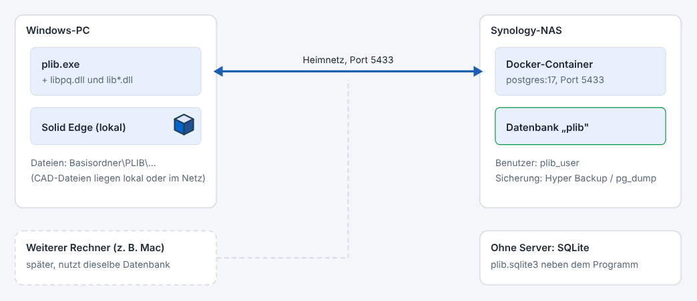
Abbildung 9: Aufbau mit PostgreSQL auf dem NAS. Ohne Server arbeitet PLIB mit einer SQLite-Datei auf dem eigenen Rechner. Die Verbindung bleibt im Heimnetz, es wird nichts im Router freigegeben.
postgres:17 auf dem NAS), eine Datenbank plib und ein Benutzer plib_user, dem die Datenbank gehört.libpq.dll samt den zugehörigen lib*.dll-Dateien neben der plib.exe. Du findest sie im Ordner runtime der pgAdmin-4-Installation (C:\Program Files\pgAdmin 4\runtime). Beide Programme müssen 64 Bit sein.plib.ini ab (mit Windows-Benutzerverschlüsselung, es lässt sich nur unter deinem Windows-Konto und auf diesem Rechner wieder entschlüsseln; ein bisher im Klartext gespeichertes Passwort wird beim nächsten Speichern ersetzt). Ohne Häkchen fragt PLIB bei jedem Start danach.„Datei → Daten aus SQLite-Datei nach PostgreSQL übernehmen": Wähle deine bisherige plib.sqlite3. Alle Daten auf dem Server werden dabei gelöscht und ersetzt. PLIB kopiert alle Tabellen samt Bildern in einem Schritt. Geht etwas schief, wird nichts verändert. Öffne die SQLite-Datei vorher einmal mit der aktuellen Programmversion, damit sie auf dem neuesten Stand ist.
„Datei → Datenbank wechseln" bietet das an (mit Neustart). Startet PLIB gar nicht mehr, setze in plib.ini unter [Datenbank] die Zeile Typ=sqlite, oder starte das Programm mit einem Dateipfad als Parameter.
Die Dateisicherungen von PLIB gibt es bei PostgreSQL nicht. Der Server wird auf dem NAS gesichert, am besten mit Hyper Backup auf den Datenordner (docker/postgres) und zusätzlich mit einem täglichen pg_dump, weil eine laufende Datenbank beim Kopieren der Dateien nicht immer sauber gesichert wird.
PLIB kann Solid Edge (getestet mit Solid Edge 2026) über die COM-Automatisierung steuern. Das geht nur unter Windows. Bei der Community Edition ist nur die nicht-kommerzielle Nutzung erlaubt. Dazu kommt die Anbindung an CAD-Kataloge im Internet: PLIB speichert den Link zum Modell eines Teils und übernimmt die heruntergeladene Datei.
| Beim Start aus Lazarus Der Debugger hält bei Fehlern von Solid Edge mit „Break" an, auch wenn PLIB sie abfängt. Klicke „Continue" und setze den Haken „Diesen Ausnahmetyp übergehen", oder starte plib.exe direkt per Doppelklick. |
Der Würfel-Knopf oder „Solid Edge → Verbindung testen" sucht eine laufende Solid-Edge-Sitzung, startet sonst Solid Edge und zeigt Name, Version, Zahl der offenen Dokumente und das aktive Dokument.
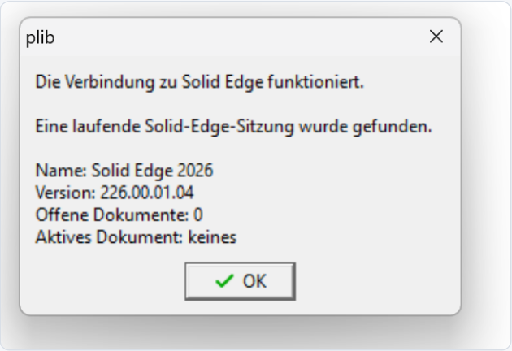
Abbildung 10: Meldung des Verbindungstests bei laufendem Solid Edge (hier ohne geöffnetes Dokument).
Mit „Solid Edge → Basisordner für CAD-Dateien festlegen" wählst du den Ordner, unter dem deine CAD-Dateien liegen. Dateien darunter werden mit relativem Pfad gespeichert, sodass die Zuordnungen auch auf einem anderen Rechner passen, auf dem derselbe Ordner anders eingebunden ist (dort den Basisordner entsprechend einstellen). Bereits gespeicherte absolute Pfade bleiben unverändert.
Viele Hersteller stellen ihre Teile als 3D-Modelle in CAD-Katalogen bereit, etwa über 3DfindIT oder PARTcommunity. PLIB lädt die Modelle nicht selbst herunter, merkt sich aber den Weg dorthin und nimmt die heruntergeladene Datei danach automatisch auf:
https:// wird angenommen; geöffnet werden nur http- und https-Adressen.| Wo landet die Datei? Im Unterordner Katalog deines Basisordners für CAD-Dateien. Ist kein Basisordner eingestellt, legt PLIB den Ordner PLIB_CAD im Download-Ordner an. Gibt es schon eine Datei gleichen Namens, fragt PLIB vor dem Überschreiben. |
Mit Solid Edge → Download-Ordner für CAD-Kataloge festlegen wählst du den Ordner, in den dein Browser Downloads speichert. Ohne Einstellung nimmt PLIB den Ordner „Downloads" in deinem Benutzerordner. Gemerkt wird die Wahl in plib.ini (Abschnitt [SolidEdge], Eintrag Downloadordner).
| Wenn nichts passiert Prüfe, ob der Download-Ordner stimmt (viele Browser fragen für jede Datei nach dem Speicherort) und ob der Katalog das Modell als Datei oder ZIP liefert. Manche Kataloge verlangen eine Anmeldung. Die Zuordnung per „CAD-Datei zuordnen" bleibt in jedem Fall möglich. |
Die Katalogbetreiber bieten auch Plugins für Solid Edge an, mit denen man Modelle direkt aus Solid Edge heraus sucht und einfügt. PLIB braucht dieses Plugin nicht, ergänzt es aber: PLIB hält Teilenummer, Klasse und Merkmale, der Katalog liefert die Geometrie.
Öffnet PLIB eine STEP- oder IGES-Datei in Solid Edge, braucht es eine leere Teilevorlage (.par ohne Körper), damit Solid Edge nicht jedes Mal nach „Teil oder Baugruppe" fragt. PLIB sucht dafür automatisch din metric part.par oder iso metric part.par im Template-Ordner von Solid Edge (zum Beispiel C:\Program Files\Siemens\Solid Edge 2026\Template). Findet es nichts, fragt es einmal nach. Die Wahl steht danach in plib.ini unter [SolidEdge] als VorlageTeil=.
Wichtig: Wähle nur eine echte Vorlage, nie ein fertiges Teil. Sonst erscheint dessen Körper in jedem neuen Teil. Zum Zurücksetzen löschst du die Zeile VorlageTeil= aus plib.ini.
Plugins im Ordner plugins erzeugen aus den Merkmalswerten eines Teils ein 3D-Modell. Das mitgelieferte Plugin „STEP-Modell erzeugen (SolidCraft)" baut Normteile als STEP-Datei, zum Beispiel Zylinderschrauben (ISO 4762), Senk- und Linsenschrauben, Unterlegscheiben, Gewindestifte (ISO 4026 bis 4029), Stifte und Schlüsselschrauben. Welche Klassen es kann, steht in plugins\solidcraft_step\plugin.ini. Es braucht den Programmteil SolidCraft (solidcraft-cli.exe); den Pfad trägst du in derselben Datei unter [SolidCraft] bei Cli= ein.
Katalog\<Beschreibung> #<Teilenummer>.step (z. B. Sechskantschraube ISO 4017 M3x10 8.8 #1000001.step) im Basisordner ab und ordnet sie dem Teil zu. Gibt es die Datei schon, fragt PLIB, ob sie neu erzeugt werden soll..par), das neben der STEP-Datei gespeichert wird. Wird die STEP-Datei neu erzeugt, legt PLIB das alte .par in den Unterordner alt.PLIB übernimmt nur die Datei, die es selbst angefordert hat. Plugins laufen als eigene Programme und sehen nur die Daten dieses einen Teils.
.par, .asm, .psm, .dft. Die Teileliste zeigt den Dateinamen in der Spalte „CAD-Datei".Schreibt in die CAD-Datei des gewählten Teils folgende benutzerdefinierte Eigenschaften und speichert sie:
PLIB_Teilenummer PLIB_Benennung PLIB_Klasse PLIB_Klassennummer PLIB_Klassencode PLIB_Lieferant PLIB_Lieferantenname PLIB_BSU PLIB_<Code> für jeden Merkmalswert, zum Beispiel PLIB_L für die Länge
Zusätzlich versucht PLIB, die Standardeigenschaften Titel (aus der Benennung) und Dokumentnummer (aus der Teilenummer) zu setzen; welche geklappt haben, steht in der Meldung. Die Eigenschaften lassen sich in Solid Edge in Stücklisten und Zeichnungsköpfen verwenden. Ist die Datei schreibgeschützt, kann PLIB nicht speichern und sagt es.
Fügt die CAD-Datei des gewählten Teils in die aktive Solid-Edge-Baugruppe ein. Das Teil kommt zunächst an den Ursprung; positioniere es in Solid Edge. Ist das aktive Dokument keine Baugruppe, meldet PLIB das.
PLIB fragt das aktive Dokument ab und sucht das passende Teil:
PLIB_Teilenummer in der Datei (auch wenn die Datei verschoben wurde; PLIB bietet an, die Zuordnung zu aktualisieren),| Taste | Wirkung |
|---|---|
| F1 | Bedienungsanleitung |
| F2 | Klasse umbenennen |
| F5 | Aktualisieren |
| Strg+F | Teilesuche |
| Strg+N | Neue Klasse |
| Strg+D | Beschreibung / Status der Klasse |
| Strg+M | Merkmale der Klasse verwalten |
| Strg+K | Merkmalkatalog |
| Strg+T | Neues Teil |
| Strg+E | Werte / Teil bearbeiten |
| Strg+O | Teil in Solid Edge öffnen |
| Strg+G | Aktuelles Solid-Edge-Dokument in PLIB zeigen |
Löschbefehle haben bewusst kein Tastenkürzel im Menü, damit nichts versehentlich verschwindet.
| Bereich | Taste | Wirkung |
|---|---|---|
| Klassenbaum | Einfg | Neue Klasse |
| Entf | Klasse löschen (mit Rückfrage) | |
| Eingabe | Wechsel in die Teileliste | |
| Teileliste | Einfg | Neues Teil |
| Entf | Teil löschen (mit Rückfrage) | |
| Eingabe | Werte / Teil bearbeiten | |
| Esc | Zurück zum Baum | |
| Werteliste | Eingabe | Wert ändern |
| Esc | Zurück zur Teileliste | |
| Teilesuche | (Tippen) | Suche startet nach kurzer Pause von selbst |
| Eingabe im Suchfeld | sofort suchen | |
| ↓ | vom Suchfeld in die Trefferliste | |
| Eingabe in der Liste | Treffer im Hauptfenster zeigen | |
| Esc | Fenster schließen | |
| Anleitung (Programm) | Eingabe | im Suchfeld: nächsten Treffer suchen |
| F3 | nächster Treffer | |
| Umschalt+F3 | vorheriger Treffer | |
| Anleitung (Browser) | / | springt ins Suchfeld |
| Eingabe | öffnet den ersten Treffer | |
| Esc | leert die Suche | |
| Suche in Klassen und Merkmalen | ↑ ↓ | Treffer wählen |
| Eingabe | Treffer im Hauptfenster zeigen |
plib_error.log neben dem Programm protokolliert. „Hilfe → Fehlerprotokoll anzeigen" öffnet die Datei.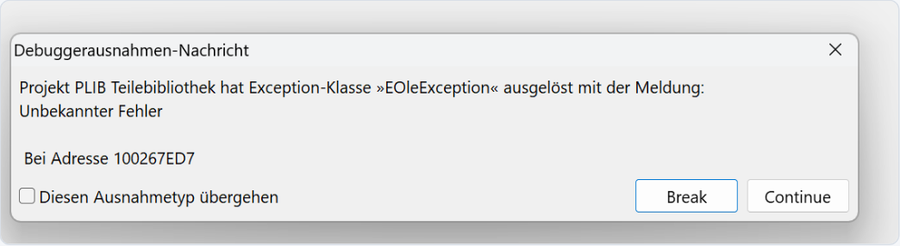
Abbildung 11: Diese Meldung stammt vom Lazarus-Debugger („Break" / „Continue"), nicht von PLIB. „Continue" klicken und „Diesen Ausnahmetyp übergehen" ankreuzen, oder plib.exe direkt starten.
Die Anleitung gibt es in zwei Formen mit demselben Inhalt:
plib_hilfe.html): mit Inhaltsverzeichnis links und einer Volltextsuche darüber. Während du tippst, erscheinen die passenden Abschnitte mit Textauszug; ein Klick springt hin und markiert die Fundstellen. Mehrere Wörter müssen alle vorkommen, Groß-/Kleinschreibung und Umlaute spielen keine Rolle („laenge" findet „Länge"). Mit / springst du ins Suchfeld, Esc leert die Suche.| Gut zu wissen Die Anleitung im Programm liegt als Datei hilfe\hilfe.html neben der plib.exe, die Browserfassung als plib_hilfe.html. Beide Dateien müssen dort liegen, sonst bleibt der Bereich leer bzw. F1 meldet das. |
Das Fenster „Über PLIB" zeigt Programmname, Versionsnummer mit Build-Datum, den Entwickler (Frank Mergl), den Copyright-Hinweis, einen Hinweis zur Nutzung ohne Gewähr und die aktuell geöffnete Datenbank. Nenne bei Fragen oder Fehlermeldungen bitte die Versionsnummer.
| Problem | Ursache und Lösung |
|---|---|
| Programm startet nicht, Meldung zur SQLite-Bibliothek | sqlite3.dll fehlt oder passt nicht zur Bitzahl (64 Bit). Datei neben plib.exe legen. |
| „libpq.dll wurde nicht gefunden" | Nur bei PostgreSQL. libpq.dll und alle lib*.dll aus dem runtime-Ordner von pgAdmin 4 neben die plib.exe kopieren. Programm vollständig neu starten. |
| „Server nicht erreichbar" bei PostgreSQL | Läuft der Container? Stimmen IP-Adresse und Port? Erlaubt die NAS-Firewall den Port? Test in PowerShell: Test-NetConnection IP -Port 5433. |
| „Benutzername oder Passwort sind falsch" | Passwort prüfen, und ob der Benutzer plib_user angelegt ist. |
| PLIB startet nicht mehr nach der Umstellung auf PostgreSQL | In plib.ini unter [Datenbank] Typ=sqlite eintragen. |
| Beim Öffnen einer STEP-Datei erscheint ein fremder Körper im neuen Teil | Als Teilevorlage ist ein fertiges Teil eingetragen. In plib.ini die Zeile VorlageTeil= löschen; PLIB nimmt dann die Solid-Edge-Vorlage. |
| Nach dem Wechsel des Designs sind Menüs noch in der alten Farbe | PLIB neu starten (die Abfrage erscheint nach dem Umschalten). |
| Schrift oder Symbole unscharf auf einem 4K-Monitor | „Ansicht → Anzeige-Info" prüfen: „Prozess DPI-bewusst: ja" muss dort stehen. Sonst in plib.ini bei [Ansicht] Hochaufloesend=ja eintragen. |
| Beim Start aus Lazarus erscheint „Break" | Das ist der Debugger, nicht PLIB. „Continue" klicken, den Haken „Diesen Ausnahmetyp übergehen" setzen, oder plib.exe direkt starten. |
| Teile oder Merkmale sind „weg" | Eine andere Datenbank ist aktiv. Statusleiste und Titelzeile zeigen sie. „Datei → Datenbank wechseln" führt zurück. |
| Ein Merkmal erscheint nicht in der Teileliste | Es muss der Klasse (oder einer Ober- oder Unterklasse) zugeordnet sein. |
| Ein Code oder eine Nummer wird abgelehnt | Erlaubt sind Buchstaben, Ziffern, - _ ., höchstens 40 Zeichen. Der Code muss eindeutig sein. Die Klassennummer hat die Form AA.BB.CC.DD. |
| Die Klassennummer wird abgelehnt | Sie muss die Form AA.BB.CC.DD haben (Zweiergruppen mit Punkten), zur Oberklasse passen (dieselben vorderen Gruppen, nächste Ebene belegt) und frei sein. PLIB nennt in der Meldung einen gültigen Vorschlag. |
| Der Klassenvorschlag ist falsch oder leer | Bezeichnung genauer fassen (Norm, Maße, Werkstoff) und fehlende Begriffe unter „Klassen → Suchbegriffe der Klasse" nachtragen. Siehe Kapitel 7. |
| Die Teilesuche findet ein Teil nicht | Haken „alle Wörter müssen passen" abschalten (weiche Suche), Filter prüfen und „nur in der gewählten Klasse" abwählen. Bei mehr als 500 Treffern wird gekürzt. |
| Nach dem CAD-Katalog-Link wird keine Datei übernommen | Download-Ordner prüfen (Solid Edge → Download-Ordner festlegen), Link erneut öffnen und den Download neu starten. Siehe Download-Ordner festlegen. |
| F1 zeigt eine leere Anleitung | Die Datei hilfe\hilfe.html fehlt neben der plib.exe. Über „Hilfe → Anleitung im Browser öffnen" geht plib_hilfe.html. |
| Solid-Edge-Verbindung schlägt fehl | Solid Edge nicht installiert oder nicht registriert (einmal als Administrator starten oder reparieren). „Zugriff verweigert": PLIB und Solid Edge mit denselben Rechten starten. |
| Datei / Ordner | Inhalt |
|---|---|
plib.exe | Das Programm |
plib_hilfe.html | Diese Anleitung für den Browser |
hilfe\hilfe.html und hilfe\bilder\ | Die Anleitung für den Bereich im Programm, mit ihren Abbildungen |
modellbau_klassenbaum.txt, normteile.txt | Importdateien für Klassenbaum (mit Suchbegriffen) und Normteile |
klassenbilder\ | Bilder für den Klassenbilder-Import (Dateiname = Klassencode) |
Katalogordner Katalog\ | Von PLIB übernommene CAD-Dateien aus Downloads (im Basisordner für CAD-Dateien) |
plugins\ | Plugins (je Plugin ein Unterordner mit plugin.ini und Programm) |
fonts\ | Optional: Schrift IBM Plex Sans für PLIB |
sqlite3.dll | SQLite-Bibliothek |
libpq.dll, lib*.dll | PostgreSQL-Bibliothek und Zubehör |
plib.sqlite3 | Datenbank (Standardort) |
backup\ | Automatische Sicherungen, neben der Datenbank |
plib.ini | Einstellungen |
plib.session | Marker für Absturzerkennung; verschwindet beim normalen Beenden |
plib_error.log | Fehlerprotokoll |
Sichere regelmäßig die Datenbank und den Ordner mit den CAD-Dateien. Bei PostgreSQL sichert der Server die Daten.
PLIB ist ein Hobbyprojekt mit den wichtigsten Funktionen. Von der Normenreihe ISO 13584 ist folgendes nicht umgesetzt:
Weitere bekannte Grenzen: mehrere Teile lassen sich nicht auf einmal löschen, Spaltenbreiten werden nicht gemerkt, und ein Mac-Programm gibt es noch nicht. Der Klassenvorschlag zählt Punkte und versteht keine Sprache. Der CAD-Katalog-Download wird beobachtet, nicht selbst ausgelöst; Anmeldung und Format wählst du im Katalog.
| Begriff | Erklärung |
|---|---|
| 3DfindIT / PARTcommunity | Internet-Kataloge mit 3D-Modellen von Herstellerteilen. PLIB speichert den Link und übernimmt den Download. |
| BSU | Basic Semantic Unit. Eindeutige Kennung eines Wörterbucheintrags aus Lieferant, Code und Version. |
| COM-Automatisierung | Windows-Schnittstelle, über die PLIB Solid Edge fernsteuert. |
| ICD | International Code Designator, vierstellige Kennung einer Registrierungsstelle (ISO/IEC 6523). |
| IRDI | International Registration Data Identifier, genormtes Kennungsformat für Wörterbucheinträge. |
| Klassennummer | Vierstufige Nummer AA.BB.CC.DD, die die Stellung der Klasse im Baum festlegt. |
| Klassenvorschlag | Punktebasierte Empfehlung der Klasse für ein neues Teil. |
| Merkmal / Eigenschaft | Beschreibendes Datenfeld einer Klasse, zum Beispiel Länge. |
| PLIB | Teilebibliothek nach ISO 13584; hier auch der Name dieses Programms. |
| Punkte | Gewichte der Kriterien des Klassenvorschlags (Stammdaten → Punkte für den Klassenvorschlag). |
| Suchbegriff | Wort einer Klasse, an dem der Klassenvorschlag sie erkennt. |
| Teilesuche | Suchfenster für Teile mit Merkmalfiltern (Strg+F). |
| Vererbung | Merkmale einer Klasse gelten auch in ihren Unterklassen. |
PLIB Teilebibliothek · © 2026 Frank Mergl · Bedienungsanleitung, Version 1.0, Stand 29.10.2026. Die Anleitung beschreibt den Funktionsumfang dieses Standes. Abweichungen in späteren Versionen sind möglich.